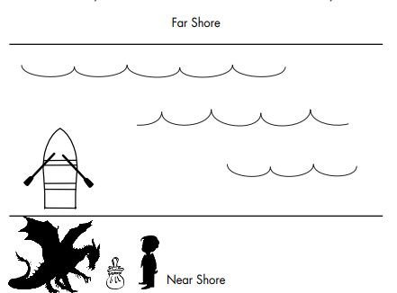

Question:
A Captain with his son, a dragon, and a bag of candy needs to cross a river. The Captain has a rowboat, but there is room for only the captain and one of his three items. Unfortunately, both the dragon and the son are hungry. The dragon cannot be left alone with the son, or the dragon will eat the son. Likewise, the son cannot be left alone with the bag of candy, or the son will eat the candy. How does the Captain get everything across the river?
Answer: